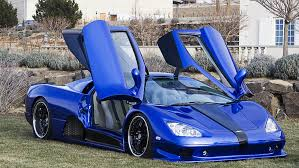
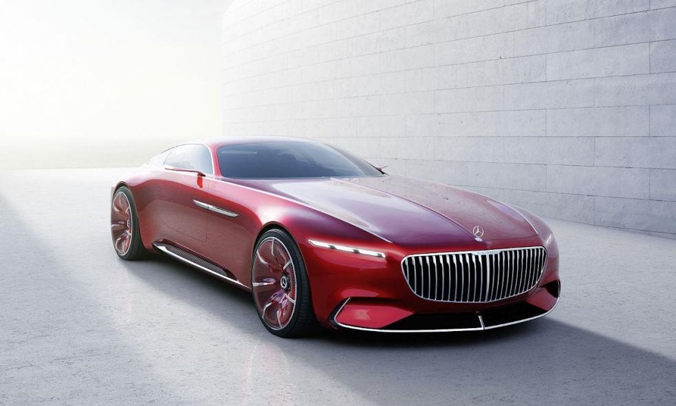
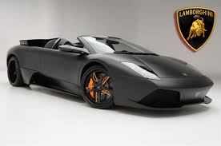

bugatti continued the brand tradition of developing super sport versions of successful models with the veyron 16.4 super sport. the veyron 16.4 super sport expanded the limits of possibility in the automotive sector even further and set new benchmarks.
1,200 hp, a maximum torque of 1,500 Nm, acceleration from 0 to 100 km/h in 2.5 seconds and a top speed of 415 km/h – 2010 the Veyron 16.4 Super Sport made experts and car fans all around the world marvel at this performance data and shone bright as the new star in the super sports car sky.
In the year of its market launch the Veyron 16.4 already set up a speed record for street cars. Adhering to the the Guiness World Record restrictions an unprecedented 431,072 km/h was reached and the Veyron was knighted as the fastest super sportscar of its time.
The guiding principle of the genius car designer Ettore Bugatti, who came from a family of artists, was to always encase perfect technology in an aesthetically appealing exterior. This commitment lives on today: the designers gave the Veyron 16.4 Super Sport an utterly unique appearance – and at the same time, every single exterior modification serves to improve performance.
The Super Sport’s flat, elongated form is immediately recognisable. Instead of bonnet scoops, the 16-cylinder engine is ventilated by two NACA ducts in the roof.
bugatti continued the brand tradition of developing super sport versions of successful models with the veyron 16.4 super sport. the veyron 16.4 super sport expanded the limits of possibility in the automotive sector even further and set new benchmarks.
1,200 hp, a maximum torque of 1,500 Nm, acceleration from 0 to 100 km/h in 2.5 seconds and a top speed of 415 km/h – 2010 the Veyron 16.4 Super Sport made experts and car fans all around the world marvel at this performance data and shone bright as the new star in the super sports car sky.
In the year of its market launch the Veyron 16.4 already set up a speed record for street cars. Adhering to the the Guiness World Record restrictions an unprecedented 431,072 km/h was reached and the Veyron was knighted as the fastest super sportscar of its time.
The guiding principle of the genius car designer Ettore Bugatti, who came from a family of artists, was to always encase perfect technology in an aesthetically appealing exterior. This commitment lives on today: the designers gave the Veyron 16.4 Super Sport an utterly unique appearance – and at the same time, every single exterior modification serves to improve performance.
The Super Sport’s flat, elongated form is immediately recognisable. Instead of bonnet scoops, the 16-cylinder engine is ventilated by two NACA ducts in the roof.
 Back in August, SSC unveiled the Ultimate Aero XT, which was a special edition Ultimate Aero featuring an all-new 423.6-cubic-inch 1,300 horsepower engine, and an updated exterior and interior. The XT was limited to only 5 units with each carrying a different price tag, with the most expensive one being the car number No. 5 at a whopping $850,000. According to SSC, the final Aero XT is now entering production, so if you were planning to acquire one, it looks like you have missed your chance. This last Aero XT features an exterior color specially chosen by the customer and that will never be used again on any Ultimate Aero or Tuatara. This special edition also features some key assemblies that will be featured in the upcoming Tuatara. The company’s new supercar will be delivered to first customers in 2013. Our hats go off to the bunch at SSC, now we just need to wait and see is the Tuatara is everything SSC has touted it as – essentially a Bugatti Veyron killer…
 MONTEREY, Calif. -- Mercedes revealed a Maybach branded two-plus-two concept that is heavily influenced by the “aero coupes” of yesteryear but with a modern electric engine and high-tech interior. The Vision Mercedes-Maybach 6 unveiled at Monterey Car Week on Thursday night drew lots of “ooohs” and “ahhhs” as well as the near-universal takeaway that its hood is really, really, really long. Mercedes conceded the point. “The classic aesthetic proportions of the show car -- an extremely long hood, low roof line and rearward positioning of the greenhouse -- recall the aero coupes of days gone by,” the company said in a statement. Mercedes sees the design more as reinterpretation of a classic rather as a retro throwback. “The Vision Mercedes Maybach 6 represents the ultimate in contemporary luxury,” said Gorden Wagener, head of design at Daimler AG. “It is hot and cool.” The cool part is embodied by the technoid character of its narrow headlights, partially transparent rims and split rear window, the company said. The rear view of the car, however, does look distinctively retro with a tiny window slat on each side and sharply sloping rear end. Mercedes said the extended round “boat tail” is meant to conjure a luxury yacht. Other design elements include gull-wing doors, a grinning, slatted front grill that Mercedes said was inspired by a pinstripe suit and a high-tech cabin. The interior is minimalistic in the extreme with door padding swooping into the front seats and across the center console for an integrated look. The entire front part of the cabin looks like a semi-circular pod with a head-up display across the windshield. The coupe is designed to hold a shallow underfloor battery with over 200 miles of range from its 738 electric horsepower, Mercedes said. The 19-foot coupe would accelerate to 60 miles per hour in under 4 seconds in the company’s current vision for the concept, which for now is just a design exercise. In Mercedes parlance, Vision stands for concept car and the 6 stands for the car’s length in meters.
 Automobili Lamborghini S.p.A. aka Lamborghini started its long-lasting rendezvous with the world of automobiles in 1963. Its legendary founder, manufacturing magnate Ferruccio Lamborghini, established the company with the aim of producing a refined grand tourer to compete with the products of other established brands like Ferrari. Ferruccio Lamborghini manifested his childhood interest in cars via the ownership of several luxury automobiles including Alfa Romeos, Lancias, Maseratis, and a Mercedes-Benz. He was a huge fan of Ferrari and bought his first Ferrari, a 250GT, in 1958, however, he found them to be way too noisy and rough. Once, when he found that his Ferrari's clutch was broken, Lamborghini went to Ferrari and demanded a better replacement. Ferrari belittled him, saying that he was just a tractor maker, and hence, could not know much about sports cars. And that pushed him to start his own venture, which would help him realize his vision of a perfect grand tourer. And soon the Lamborghini 350GTV, a prototype made in just four months, was unveiled at the 1963 Turin Motor Show. And despite the favorable feedback the 350GTV received, Lamborghini reworked the production model. It was launched as the Lamborghini 350GT and went into production in 1964. Lamborghini cars weren't officially seen in India until 2008, when Lamborghini opened its first showroom in New Delhi, India. The Italian car manufacturer opened its second showroom in the country in Mumbai in April 2012. Despite the economic slowdown, luxury cars seem to have found a niche market in the country. That seems to be the reason why Lamborghini cars are now easily spotted on Indian roads, resting the rumored after-effects of the economic downturn. The company plans to sell about 40-50 Lamborghini cars in India by 2015. The company also stated that they have always eyed the Indian market with a lot of interest. And given the substantial market growth, just one or two centers may not really be enough for Lamborghini cars in India. The coming years may see the country opening doors to more showrooms for Lamborghini cars. Automobili Lamborghini commonly referred to as Lamborghini, is an Italian manufacturer of high-performance sports cars based in the small Italian village of Sant'Agata Bolognese, near Bologna. Lamborghini is now a subsidiary of German car manufacturer Audi AG, which is, in turn, a subsidiary of the Volkswagen Group. Lamborghini 350GTV prototype was introduced at the 1963 Turin Auto Show. Lamborghini commissioned Carrozzeria Touring to design a more practical model. This was put into production as the 350GT. Sales of the 350GT totaled 130.The 350GT was followed by the 400GT. Profits from the 400GT and its predecessor gave the company ample capital to design its first supercar, the Lamborghini Miura. The chassis of the new Miura was introduced by Ferruccio himself at the November 1965Turin Auto Show.
Lamborghini Motor Campany. ______Useful Link______
 UAN: 111-729-526
UAN: 111-729-526
 (+0092-213) 4130786-90
(+0092-213) 4130786-90
CELL: 92-311-1729526
USA NO +1(716)941 7792
UK NO (+44)115 970 6256
UAN: 111-729-526
(+0092-213) 4130786-90